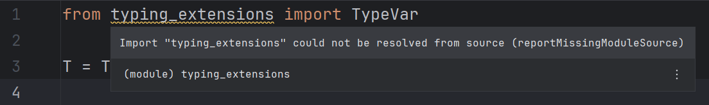
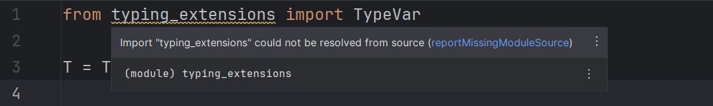
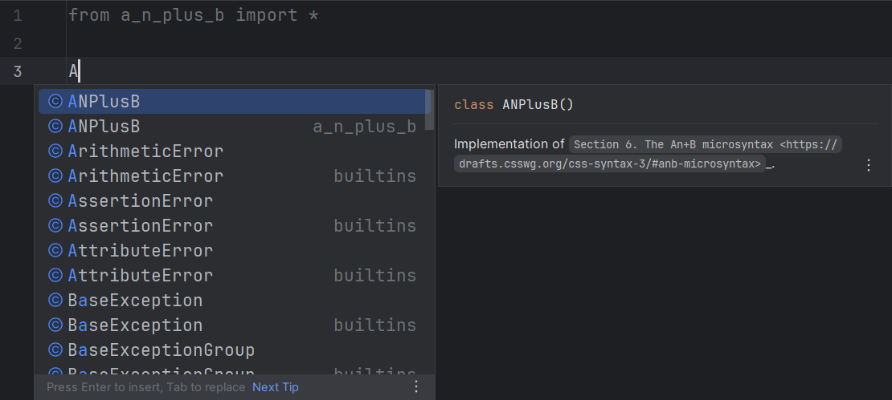
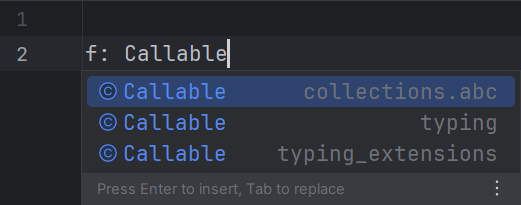
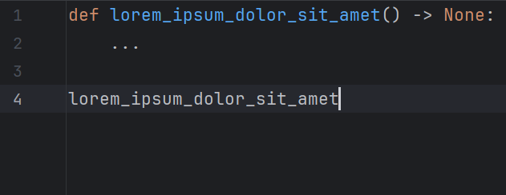

Other settings#
Auto-restart server#
Whether the language server should be automatically restarted on configuration change.
Default: true
Note
The server might be restarted more than once if both configuration panels are modified.
Diagnostics#
Whether diagnostics should be shown.
Default: true


Use editor font for tooltips#
Whether diagnostic tooltips should be displayed in the editor's font.
Monospaced messages might be more readable for lengthy error messages with many embedded code parts.
Default: false


Prefix tooltip messages#
Whether messages in tooltips (and only in tooltips) should be prefixed with "Pyright:".
Default: false
Link error codes in tooltips#
Whether error codes in tooltip messages should be displayed as hyperlinks to Pyright's documentation.
Default: false

Tagged hints#
Whether the language server should emit "Unnecessary" and "Deprecated" hints, which are visualized in the IDE as faded-out and strikethrough text.
This corresponds to the pyright.disableTaggedHints setting.
Default: true


Minimum severity level#
Only diagnostics whose severity is equal or higher than this threshold will be emitted.
This corresponds to the --level CLI option.
Default: Information


Type information on hover#
Whether the language server should show the type, signature and/or documentation when a symbol is hovered.
Default: true


Autocompletion#
Whether the language server should suggests potential completion items.
Default: true

Note
The autocompletion result might be modified by the plugin depending on other configurations listed below.
Auto-import completions#
Whether the language server should offer completions which, if accepted,
will also add a import statement for that newly introduced symbol.
This corresponds to the python.analysis.autoImportCompletions setting.
Default: true

Monkeypatch auto-import details#
Whether an auto-import completion item's detail ("Auto-import" or a similar localized message) should be overridden by its import source (module, package, etc.).
Default: true

Autocomplete parentheses#
Check this option to also automatically insert parentheses for function, method and constructor completions.
Default: true



Monkeypatch trailing quote bug#
Uncheck this option to use the IDE's native implementation when applying quoted completions, which may insert extraneous trailing quotes.
Upstream issue: IJPL-155741.
Default: true

Add common search paths#
Whether the language server should add common search paths like src
when there are no execution environments defined in the configuration file.
This corresponds to the python.analysis.autoSearchPaths setting.
Default: true
Targeted file extensions#
A file whose extension is included in this list will be recognized as suitable for the language server to run on. This is useful if you use a server whose support range is wider than that of Pyright.
Each extension should be written on one line when the editor is expanded.
Otherwise, use the pipe character (|) to separate them.
Leading and trailing whitespace are stripped away. Blank extensions are thus considered invalid.
Default: py, pyi, pyw
Note
Presumably, due to a limitation/bug of IntelliJ, characters like "🔥" (U+1F525 Fire, the extension for Mojo) cannot be serialized correctly into setting files and therefore will not persist between IDE sessions.
Testing shows that this affects characters whose codepoints are greater than U+FFFD.
Workspace folders#
The folders defined by this option will be passed
to the language server as "workspace folders".
Pyright will only recognize pyproject.toml/pyrightconfig.json files
which are direct children of these folders.
Possible choices:
- Project base directories: Top-level directories which contain files related to the project, often only one (project root).
- Source roots: Directories marked as "source roots".
Default: Project base directories
Diagnostic mode#
Note
This option's usefulness is as of yet unknown.
Modify this option to control the number of files for which the language server will analyze and report diagnostics.
This corresponds to the python.analysis.diagnosticMode setting.
Default: Open files only
Log level#
Note
Language server logs are not recorded IDE log files by default. You need to manually enable it.
Modify this option to make the language server emit more or less log messages.
This corresponds to the python.analysis.logLevel setting.
Default: Information
Locale#
| Default | Corresponding environment variable |
|---|---|
| Default | LC_ALL |
The language Pyright should emit messages in.
This corresponds to the LC_ALL environment variable.
Default: Default (unspecified)
Number of threads#
The number of threads to paralellize type checking on. A value of 0 means nothing is passed to the executable.
This corresponds to the --threads CLI option.
Default: 0
Warning
The --thread option is only available in Pyright 1.1.371 and later.
Modifying it will cause an error for older versions.